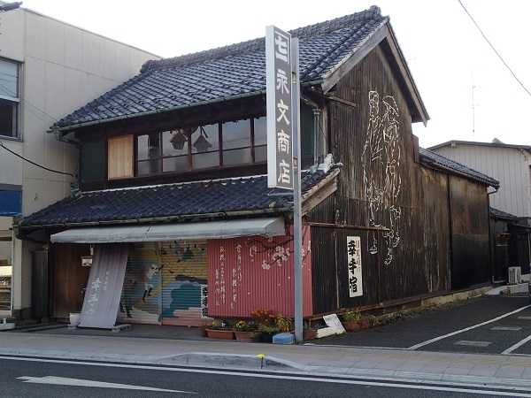

将軍が日光参拝に使用した道と言われているそうです。 本郷追分を出発して幸手にて日光道中に合流する13里の脇街道。 埼玉県の自宅（又は茨城の実家）から電車を乗り継ぎ日帰り 計3日間で完歩する。
| 年月日 | 出発駅・時間 | 到着駅・時間 | 歩き距離・時間 | 写真ﾌﾞﾛｸﾞ |
|---|---|---|---|---|
| 2015/11/27 | 本郷三丁目駅_10：14 | 東川口駅_15：04 | 23.5Km：4時間49分 | 2015/11 |
| 2015/11/29 | 東川口駅_9：17 | 岩槻駅_13:12 | 16.4Km：3時間54分 | 2015/11 |
| 2015/11/30 | 岩槻駅_10：41 | 幸手駅_14:52 | 18.8Km：4時間11分 | 2015/11 2015/11 完歩 |
幸手宿 古民家
